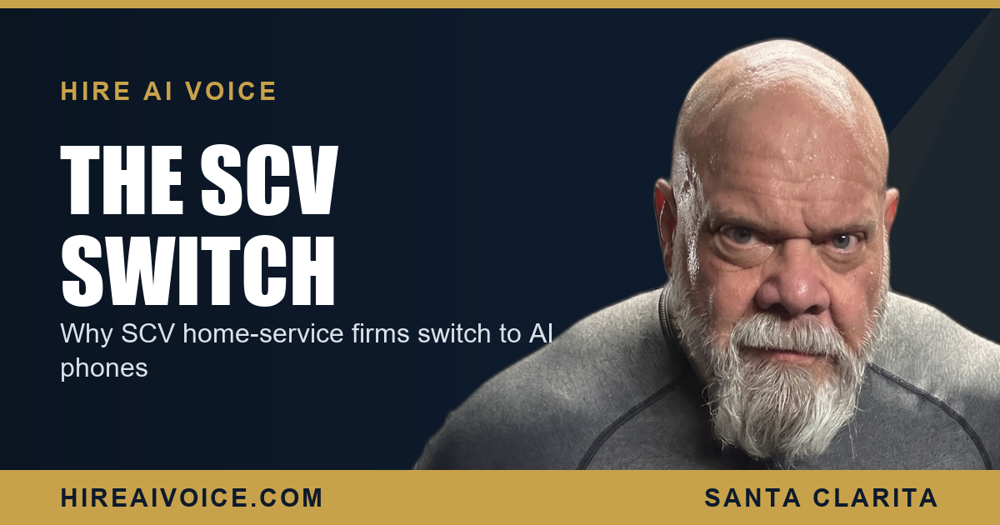

Why Santa Clarita Home-Service Businesses Are Switching to AI Phones

The Short Version
- Local home-service owners are dropping voicemail and pricey answering services for AI phone agents that answer every call.
- They switch for four reasons: it answers 24/7, it costs less, it actually books the job, and it never calls in sick.
- The wake-up moment is always the same: they find out how many calls were quietly rolling to voicemail and walking to a competitor.
- After they switch, the after-hours and lunch-rush calls that used to disappear start showing up as booked work on the calendar.
- Setup takes 72 hours, runs $297 or $497 a month, and there are no contracts, so the math proves itself fast.
What Is an AI Phone System for a Home-Service Business?
An AI phone system is a voice agent that answers your business phone for you, around the clock. It picks up on the first ring, greets the caller by your business name, answers the common questions, figures out what the job is, and books the appointment on your calendar. It does all of that while you are on a roof, under a sink, or asleep. I have spent 27 years in Santa Clarita real estate, and I have watched plenty of good local trades lose work for one reason: nobody was free to answer the phone.
That is the gap these owners are closing. Not with another marketing spend, but by making sure the calls they already get actually get answered.
Why Are Santa Clarita Owners Switching Right Now?
Because voicemail loses jobs and answering services cost too much for what they hand back. A home-service business lives and dies on the phone. When an AC unit dies in July or a pipe lets go on a Sunday, the customer calls down the list until a human voice picks up. Voicemail is a dead end. The old fix was a paid answering service, but most of those just take a message and charge by the minute, so the owner pays a premium and still has to call the lead back later, by which point the job is gone.
They did not lose the customer on price. They lost them on a phone nobody could pick up.
So Santa Clarita owners are moving to AI phone agents that answer every call, work nights and weekends, cost a fraction of a human service, and never quit. Coming out of corrections and a stretch with LAPD before real estate, I am wired to look at where the leak is. For most of these businesses, the leak is not the ad budget. It is the missed call.
The Four Reasons They Actually Pull the Trigger
When I talk to a local HVAC, plumbing, or roofing owner, the same four reasons come up every time.
1. It answers every call. No voicemail, no hold music, no ringing into the void. The 9 PM emergency and the lunch-rush overflow both get a real conversation instead of a dead line.
2. It costs less. A flat $297 or $497 a month, with unlimited calls answered, beats a per-minute answering service that only takes messages. One booked job usually covers the whole month.
3. It books the job. The agent does not just write down a name. It qualifies the work and drops the appointment straight onto the calendar, then follows up so the lead does not go cold.
4. It never calls in sick. No turnover, no training a new receptionist, no holiday gaps. It shows up every hour of every day, the same way, forever.
How Much Does It Cost Compared to What They Were Paying?
An AI voice agent runs a flat $297 or $497 a month, and that usually undercuts what owners were already spending to miss calls. Think about the real math. A traditional answering service charges per call or per minute and still only relays a message. A part-time front-desk hire costs far more than $497 a month and goes home at 5. Voicemail is free, and it is the most expensive option of all, because it quietly hands jobs to the competitor down the road.
This is the whole idea behind an AI receptionist that never sleeps. It closes the gap that costs home-service businesses the most, and it does it for less than the old patchwork of voicemail, message-takers, and call-backs they were stitching together.
What Changes the Week After They Switch?
The calls that used to vanish start showing up as booked work. The first thing owners notice is the after-hours and weekend jobs they never used to catch. The Saturday-morning roof leak, the Sunday-night no-heat call, the inquiry that came in while they were already on a job. Those used to roll to voicemail and disappear. Now they land on the calendar before the owner even sees the missed-call notification.
The second change is quieter but bigger. The owner stops feeling chained to the phone. They can run the job in front of them without the nagging worry that the next big lead is ringing through to nothing. For a trade in Santa Clarita Valley or anywhere in Los Angeles County, that is the difference between working in the business and drowning in it.
What to Do This Week
You do not need a new ad campaign to fix this. You need to stop leaking the calls you already get. Two moves:
1. Count the misses. For one week, track how many calls you answer live versus how many roll to voicemail or get returned hours later. The gap is your hidden revenue leak, and it is bigger than you think.
2. Put a 24/7 AI answer in place. An agent that picks up every call, books the appointment, and follows up turns your worst response times into your best ones, and it goes live in 72 hours with no contract to trap you.
The home-service businesses winning in Santa Clarita are not the ones with the biggest budgets. They are the ones whose phone always gets answered. That is why they switched. The math is not complicated, and neither is the move.
Answer Every Call, Book Every Job
Our AI voice agent answers every call 24/7, books the job, and follows up automatically. Live in 72 hours. $297/month, no contracts. Or call Sarah, our live agent, and hear it yourself.